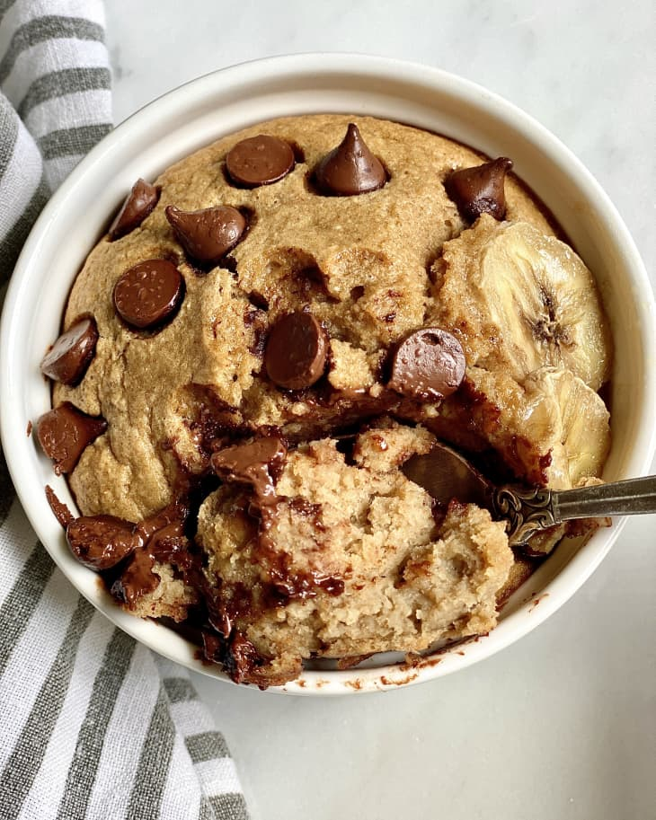

Banana bread baked oats

Ingredients
- Cooking spray
- 2 medium ripe bananas
- 2 large eggs
- 1 cup old-fashioned or quick-cooking oats
- 2 tablespoons liquid sweetener, such as maple syrup, honey, or agave nectar
- 1 teaspoon ground cinnamon
- 1/2 teaspoon baking powder
- 1/2 teaspoon kosher salt
- 4 tablespoons chocolate chips, divided
How to prepare
- Arrange a rack in the middle of the oven and heat the oven to 350F.
- Lightly coat 2 (8-ounce) ramekins with cooking spray. Place on a rimmed baking sheet.
- Place 2 medium peeled bananas, 2 large eggs, 1 cup old-fashioned or quick-cooking oats, 2 tablespoons sweetener, 1 teaspoon ground cinnamon, 1/2 teaspoon baking powder, and 1/2 teaspoon kosher salt in a blender. Blend on high speed until smooth, 20 to 30 seconds.
- Pour into the ramekins. Add 2 tablespoons chocolate chips to each ramekin and use the handle of the tablespoon to stir to combine. Let sit for 5 minutes so the oats can absorb the liquid.
- Bake until the oatmeal is puffed, pulls away from the sides of the ramekin, and a toothpick inserted in the center comes out clean, 30 to 35 minutes. Let cool for 5 minutes before serving.
Storage
**Leftovers can be refrigerated in an airtight container for up to 4 days. Reheat in the microwave or in a low oven until heated through.**
Back to Home Page